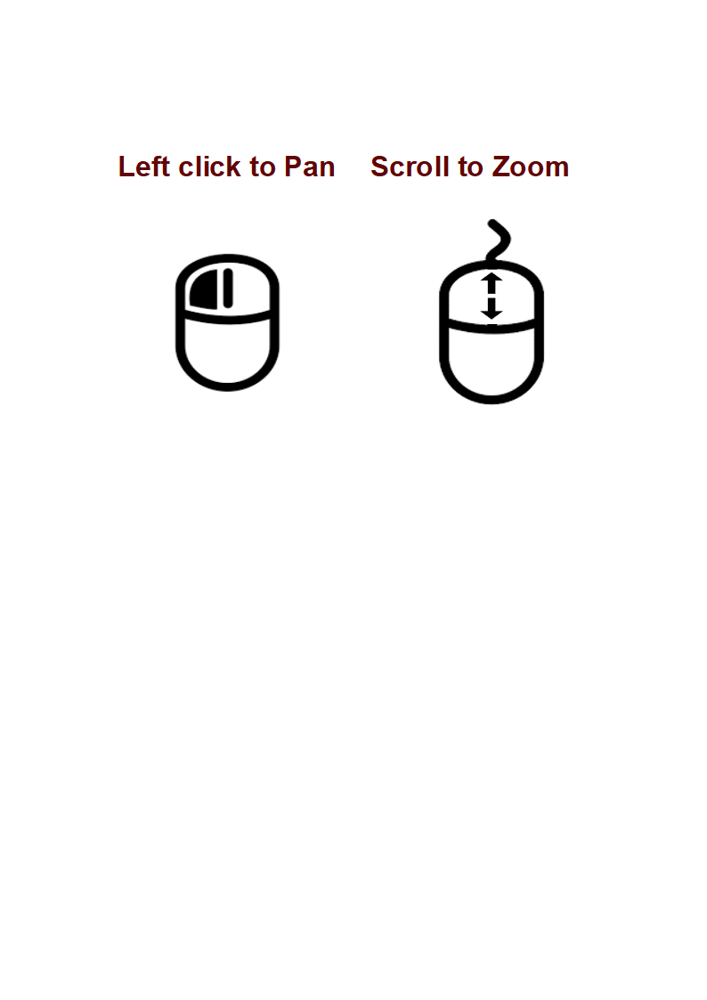

Trace History of Karnataka
Clusters: From Maharashtra - May 15th.
Discharged
Deceased
ZOOM TO FIT
ZOOM IN
ZOOM OUT

+
SHOW ALL
Bangalore-Urban
Bidar
Davangere
Dharwad
Gadag
Hassan
Kalburgi
Raichur
Shivamogga
Tumkur
Udupi
Vijayapura
Bagalkote
Belgavi
Bellary
Karwar
Mandya
Mangalore
Yadgir
Bangalore-Rural
Chikballarpur
Chikkamagalur
Haveri
Kodagu
Koppal
Mysore
Nagamangala
Savanur
Shiggavi